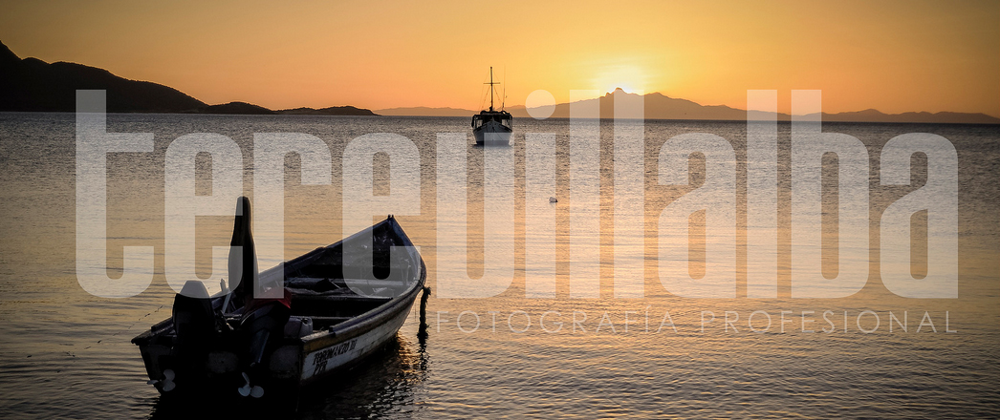

Juan Griego
date_range 28 de Diciembre de 2017. add_location Nueva Esparta, VenezuelaUbicado a orillas de una bahía del noreste de la isla de Margarita, es la ciudad y puerto más septentrional de toda Venezuela y capital del municipio Marcano del estado Nueva Esparta. El Censo del 2001 registró una población de 28.256 habitantes para esta ciudad.
Es el lugar donde vivieron mis abuelos paternos, es muy especial para mi familia ya que alli disfrutaron muchas vacaciones durante su infancia y adolescencia. Lo conozco desde hace muchos años y es el lugar donde he visto los atardeceres más espectaculares. Su bahía de aguas tranquilas se funde con ese cielo de colres mágicos. Arriba les dejo una de mis fotos en uno de esos atardeceres.